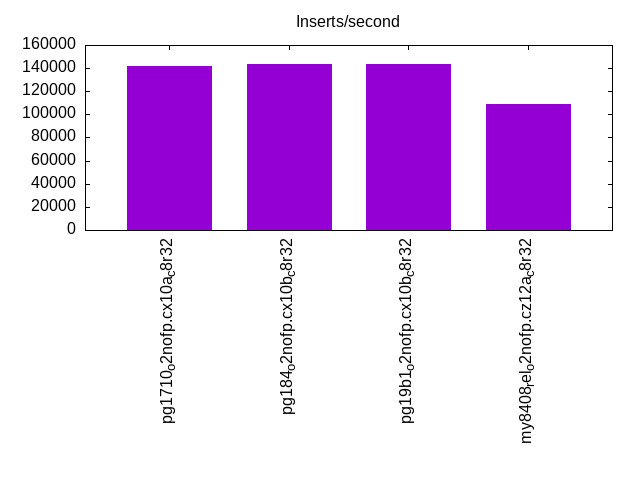
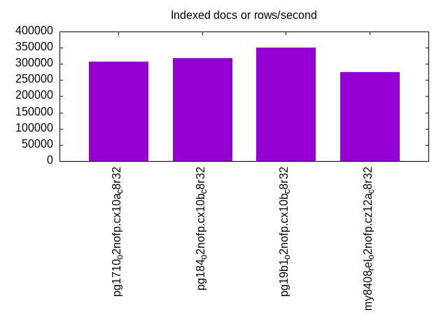
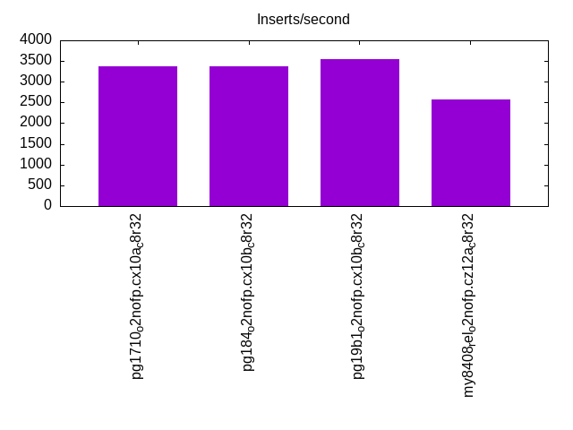
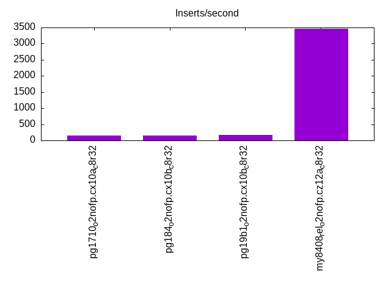
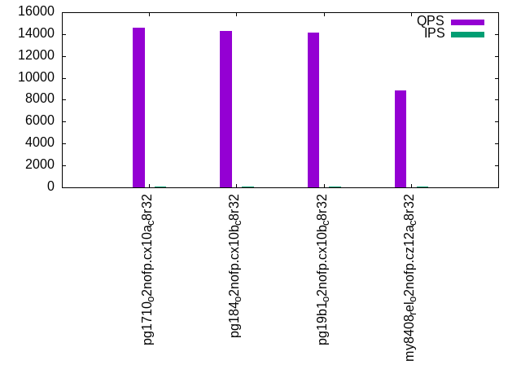
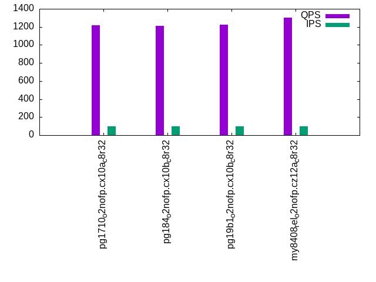
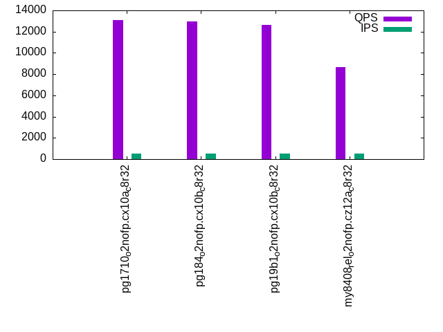
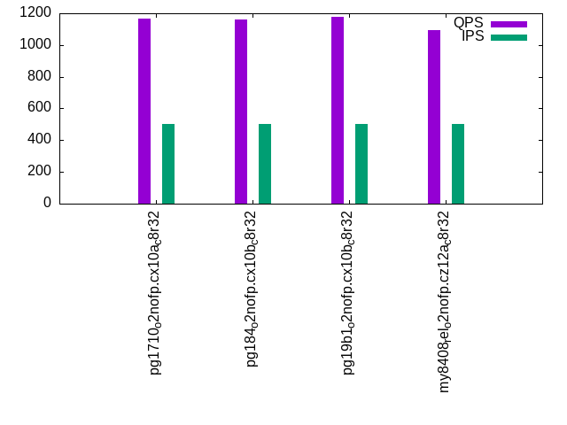
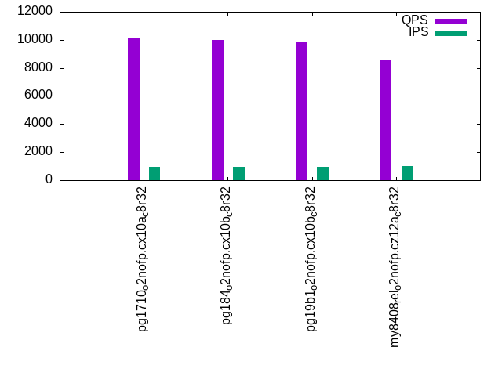
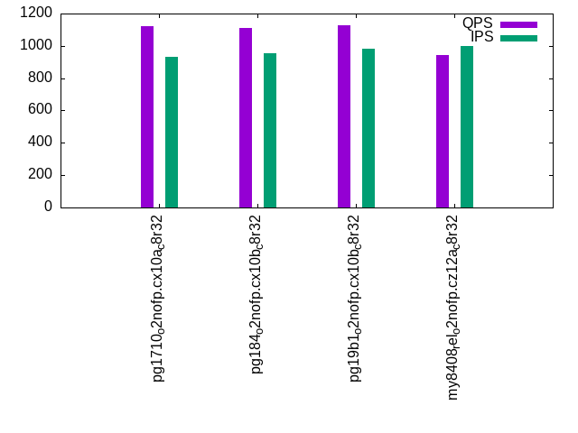

This is a report for the insert benchmark with 800M docs and 1 client(s). It is generated by scripts (bash, awk, sed) and Tufte might not be impressed. An overview of the insert benchmark is here and a short update is here. Below, by DBMS, I mean DBMS+version.config. An example is my8020.c10b40 where my means MySQL, 8020 is version 8.0.20 and c10b40 is the name for the configuration file.
The test server has 8 AMD cores, 32G RAM and an NVMe SSD. It is described here as the PN53. The benchmark was run with 1 client and there were 1 or 3 connections per client (1 for queries or inserts without rate limits, 1+1 for rate limited inserts+deletes). It uses 1 table. It loads 800M rows per table without secondary indexes, creates 3 secondary indexes per table, then inserts 4m+1m rows per table with a delete per insert to avoid growing the table. It then does 6 read+write tests for 3600s each that do queries as fast as possible with 100,100,500,500,1000,1000 inserts/s and the same for deletes/s per client concurrent with the queries. The database is larger than memory. Clients and the DBMS share one server. The per-database configs are in the per-database subdirectories here.
The tested DBMS are:
The numbers are inserts/s for l.i0, l.i1 and l.i2, indexed docs (or rows) /s for l.x and queries/s for qr100, qp100 thru qr1000, qp1000" The values are the average rate over the entire test for inserts (IPS) and queries (QPS). The range of values for IPS and QPS is split into 3 parts: bottom 25%, middle 50%, top 25%. Values in the bottom 25% have a red background, values in the top 25% have a green background and values in the middle have no color. A gray background is used for values that can be ignored because the DBMS did not sustain the target insert rate. Red backgrounds are not used when the minimum value is within 80% of the max value.
| dbms | l.i0 | l.x | l.i1 | l.i2 | qr100 | qp100 | qr500 | qp500 | qr1000 | qp1000 |
|---|---|---|---|---|---|---|---|---|---|---|
| pg1710_o2nofp.cx10a_c8r32 | 141869 | 306748 | 3370 | 160 | 14575 | 1215 | 13112 | 1169 | 10115 | 1124 |
| pg184_o2nofp.cx10b_c8r32 | 143498 | 316832 | 3373 | 160 | 14266 | 1212 | 12942 | 1163 | 9987 | 1113 |
| pg19b1_o2nofp.cx10b_c8r32 | 143988 | 351340 | 3543 | 174 | 14113 | 1227 | 12601 | 1180 | 9799 | 1128 |
| my8408_rel_o2nofp.cz12a_c8r32 | 109290 | 274537 | 2569 | 3460 | 8860 | 1305 | 8673 | 1092 | 8594 | 942 |
This table has relative throughput, throughput for the DBMS relative to the DBMS in the first line, using the absolute throughput from the previous table. Values less than 0.95 have a yellow background. Values greater than 1.05 have a blue background.
| dbms | l.i0 | l.x | l.i1 | l.i2 | qr100 | qp100 | qr500 | qp500 | qr1000 | qp1000 |
|---|---|---|---|---|---|---|---|---|---|---|
| pg1710_o2nofp.cx10a_c8r32 | 1.00 | 1.00 | 1.00 | 1.00 | 1.00 | 1.00 | 1.00 | 1.00 | 1.00 | 1.00 |
| pg184_o2nofp.cx10b_c8r32 | 1.01 | 1.03 | 1.00 | 1.00 | 0.98 | 1.00 | 0.99 | 0.99 | 0.99 | 0.99 |
| pg19b1_o2nofp.cx10b_c8r32 | 1.01 | 1.15 | 1.05 | 1.09 | 0.97 | 1.01 | 0.96 | 1.01 | 0.97 | 1.00 |
| my8408_rel_o2nofp.cz12a_c8r32 | 0.77 | 0.89 | 0.76 | 21.62 | 0.61 | 1.07 | 0.66 | 0.93 | 0.85 | 0.84 |
This lists the average rate of inserts/s for the tests that do inserts concurrent with queries. For such tests the query rate is listed in the table above. The read+write tests are setup so that the insert rate should match the target rate every second. Cells that are not at least 95% of the target have a red background to indicate a failure to satisfy the target.
| dbms | qr100.L1 | qp100.L2 | qr500.L3 | qp500.L4 | qr1000.L5 | qp1000.L6 |
|---|---|---|---|---|---|---|
| pg1710_o2nofp.cx10a_c8r32 | 100 | 100 | 500 | 500 | 951 | 930 |
| pg184_o2nofp.cx10b_c8r32 | 100 | 100 | 500 | 500 | 970 | 957 |
| pg19b1_o2nofp.cx10b_c8r32 | 100 | 100 | 500 | 500 | 973 | 980 |
| my8408_rel_o2nofp.cz12a_c8r32 | 100 | 100 | 500 | 500 | 1000 | 1000 |
| target | 100 | 100 | 500 | 500 | 1000 | 1000 |
l.i0: load without secondary indexes. Graphs for performance per 1-second interval are here.
Average throughput:

Insert response time histogram: each cell has the percentage of responses that take <= the time in the header and max is the max response time in seconds. For the max column values in the top 25% of the range have a red background and in the bottom 25% of the range have a green background. The red background is not used when the min value is within 80% of the max value.
| dbms | 256us | 1ms | 4ms | 16ms | 64ms | 256ms | 1s | 4s | 16s | gt | max |
|---|---|---|---|---|---|---|---|---|---|---|---|
| pg1710_o2nofp.cx10a_c8r32 | 99.950 | 0.044 | 0.006 | nonzero | 0.037 | ||||||
| pg184_o2nofp.cx10b_c8r32 | 99.954 | 0.042 | 0.004 | nonzero | 0.037 | ||||||
| pg19b1_o2nofp.cx10b_c8r32 | 99.956 | 0.041 | 0.003 | nonzero | 0.032 | ||||||
| my8408_rel_o2nofp.cz12a_c8r32 | 99.543 | 0.283 | 0.171 | 0.002 | nonzero | nonzero | 0.281 |
Performance metrics for the DBMS listed above. Some are normalized by throughput, others are not. Legend for results is here.
ips qps rps rmbps wps wmbps rpq rkbpq wpi wkbpi csps cpups cspq cpupq dbgb1 dbgb2 rss maxop p50 p99 tag 141869 0 25 0.2 532.1 58.7 0.000 0.001 0.004 0.424 14671 20.2 0.103 11 76.5 116.6 2.1 0.037 142084 138286 pg1710_o2nofp.cx10a_c8r32 143498 0 26 0.2 536.4 59.1 0.000 0.001 0.004 0.422 14835 20.3 0.103 11 76.5 116.6 18.9 0.037 143881 140081 pg184_o2nofp.cx10b_c8r32 143988 0 26 0.2 537.5 59.3 0.000 0.001 0.004 0.422 14904 20.4 0.104 11 76.5 116.6 2.1 0.032 144285 140685 pg19b1_o2nofp.cx10b_c8r32 109290 0 0 0.0 742.1 41.0 0.000 0.000 0.007 0.384 13984 17.3 0.128 13 52.4 120.1 25.2 0.281 109088 102886 my8408_rel_o2nofp.cz12a_c8r32
Average values from iostat.
l.x: create secondary indexes.
Average throughput:

Performance metrics for the DBMS listed above. Some are normalized by throughput, others are not. Legend for results is here.
ips qps rps rmbps wps wmbps rpq rkbpq wpi wkbpi csps cpups cspq cpupq dbgb1 dbgb2 rss maxop p50 p99 tag 306748 0 826 102.4 951.7 114.2 0.003 0.342 0.003 0.381 746 13.1 0.002 3 153.6 193.7 21.7 0.002 NA NA pg1710_o2nofp.cx10a_c8r32 316832 0 858 106.5 981.0 118.4 0.003 0.344 0.003 0.383 466 13.3 0.001 3 153.6 193.7 23.4 0.003 NA NA pg184_o2nofp.cx10b_c8r32 351340 0 953 118.3 1085.1 131.0 0.003 0.345 0.003 0.382 554 13.4 0.002 3 153.6 193.7 23.4 0.002 NA NA pg19b1_o2nofp.cx10b_c8r32 274537 0 3818 376.1 8304.8 419.0 0.014 1.403 0.030 1.563 21180 37.0 0.077 11 120.7 188.4 25.4 0.001 NA NA my8408_rel_o2nofp.cz12a_c8r32
Average values from iostat.
l.i1: continue load after secondary indexes created with 50 inserts per transaction. Graphs for performance per 1-second interval are here.
Average throughput:

Insert response time histogram: each cell has the percentage of responses that take <= the time in the header and max is the max response time in seconds. For the max column values in the top 25% of the range have a red background and in the bottom 25% of the range have a green background. The red background is not used when the min value is within 80% of the max value.
| dbms | 256us | 1ms | 4ms | 16ms | 64ms | 256ms | 1s | 4s | 16s | gt | max |
|---|---|---|---|---|---|---|---|---|---|---|---|
| pg1710_o2nofp.cx10a_c8r32 | 0.009 | 99.916 | 0.074 | 0.001 | 0.074 | ||||||
| pg184_o2nofp.cx10b_c8r32 | 0.011 | 99.918 | 0.071 | 0.033 | |||||||
| pg19b1_o2nofp.cx10b_c8r32 | 0.021 | 99.919 | 0.060 | 0.037 | |||||||
| my8408_rel_o2nofp.cz12a_c8r32 | 67.684 | 27.081 | 5.230 | 0.005 | 0.534 |
Delete response time histogram: each cell has the percentage of responses that take <= the time in the header and max is the max response time in seconds. For the max column values in the top 25% of the range have a red background and in the bottom 25% of the range have a green background. The red background is not used when the min value is within 80% of the max value.
| dbms | 256us | 1ms | 4ms | 16ms | 64ms | 256ms | 1s | 4s | 16s | gt | max |
|---|---|---|---|---|---|---|---|---|---|---|---|
| pg1710_o2nofp.cx10a_c8r32 | 2.956 | 14.911 | 39.578 | 42.555 | 0.047 | ||||||
| pg184_o2nofp.cx10b_c8r32 | 3.201 | 14.863 | 38.556 | 43.380 | 0.036 | ||||||
| pg19b1_o2nofp.cx10b_c8r32 | 3.682 | 15.757 | 41.045 | 39.515 | 0.037 | ||||||
| my8408_rel_o2nofp.cz12a_c8r32 | 99.364 | 0.514 | 0.118 | 0.003 | 0.003 | 0.533 |
Performance metrics for the DBMS listed above. Some are normalized by throughput, others are not. Legend for results is here.
ips qps rps rmbps wps wmbps rpq rkbpq wpi wkbpi csps cpups cspq cpupq dbgb1 dbgb2 rss maxop p50 p99 tag 3370 0 4836 38.4 3974.7 68.0 1.435 11.654 1.179 20.674 11071 15.3 3.285 363 154.3 194.3 22.3 0.074 2599 1750 pg1710_o2nofp.cx10a_c8r32 3373 0 4846 38.4 3986.1 68.3 1.437 11.655 1.182 20.730 11057 15.5 3.279 368 154.3 194.3 22.9 0.033 2600 1800 pg184_o2nofp.cx10b_c8r32 3543 0 5099 40.4 4208.3 72.2 1.439 11.676 1.188 20.863 11655 15.6 3.290 352 154.3 194.3 0.4 0.037 2750 1800 pg19b1_o2nofp.cx10b_c8r32 2569 0 9618 150.3 14275.0 428.4 3.744 59.903 5.557 170.747 74298 17.2 28.921 536 148.7 217.1 25.4 0.534 2400 1450 my8408_rel_o2nofp.cz12a_c8r32
Average values from iostat.
l.i2: continue load after secondary indexes created with 5 inserts per transaction. Graphs for performance per 1-second interval are here.
Average throughput:

Insert response time histogram: each cell has the percentage of responses that take <= the time in the header and max is the max response time in seconds. For the max column values in the top 25% of the range have a red background and in the bottom 25% of the range have a green background. The red background is not used when the min value is within 80% of the max value.
| dbms | 256us | 1ms | 4ms | 16ms | 64ms | 256ms | 1s | 4s | 16s | gt | max |
|---|---|---|---|---|---|---|---|---|---|---|---|
| pg1710_o2nofp.cx10a_c8r32 | 91.945 | 8.022 | 0.033 | 0.006 | |||||||
| pg184_o2nofp.cx10b_c8r32 | 95.261 | 4.722 | 0.016 | 0.001 | 0.018 | ||||||
| pg19b1_o2nofp.cx10b_c8r32 | 95.398 | 4.588 | 0.015 | 0.012 | |||||||
| my8408_rel_o2nofp.cz12a_c8r32 | 55.731 | 40.263 | 3.338 | 0.667 | 0.001 | 0.101 |
Delete response time histogram: each cell has the percentage of responses that take <= the time in the header and max is the max response time in seconds. For the max column values in the top 25% of the range have a red background and in the bottom 25% of the range have a green background. The red background is not used when the min value is within 80% of the max value.
| dbms | 256us | 1ms | 4ms | 16ms | 64ms | 256ms | 1s | 4s | 16s | gt | max |
|---|---|---|---|---|---|---|---|---|---|---|---|
| pg1710_o2nofp.cx10a_c8r32 | 99.999 | 0.001 | 0.103 | ||||||||
| pg184_o2nofp.cx10b_c8r32 | 99.999 | 0.001 | 0.105 | ||||||||
| pg19b1_o2nofp.cx10b_c8r32 | 99.999 | 0.001 | 0.100 | ||||||||
| my8408_rel_o2nofp.cz12a_c8r32 | 98.714 | 1.016 | 0.257 | 0.012 | 0.001 | 0.101 |
Performance metrics for the DBMS listed above. Some are normalized by throughput, others are not. Legend for results is here.
ips qps rps rmbps wps wmbps rpq rkbpq wpi wkbpi csps cpups cspq cpupq dbgb1 dbgb2 rss maxop p50 p99 tag 160 0 172 1.4 474.7 6.6 1.070 8.773 2.960 41.979 1155 12.6 7.202 6284 154.5 194.5 23.3 0.006 160 140 pg1710_o2nofp.cx10a_c8r32 160 0 172 1.4 473.7 6.6 1.072 8.780 2.955 42.013 1188 12.6 7.414 6288 154.4 194.5 23.4 0.018 160 145 pg184_o2nofp.cx10b_c8r32 174 0 186 1.5 501.8 7.0 1.070 8.758 2.890 41.228 1263 12.6 7.273 5806 154.5 194.5 1.9 0.012 170 155 pg19b1_o2nofp.cx10b_c8r32 3460 0 9380 146.6 14342.7 416.5 2.711 43.373 4.145 123.244 94301 24.6 27.253 569 149.0 217.5 25.4 0.101 3450 2890 my8408_rel_o2nofp.cz12a_c8r32
Average values from iostat.
qr100.L1: range queries with 100 insert/s per client. Graphs for performance per 1-second interval are here.
Average throughput:

Query response time histogram: each cell has the percentage of responses that take <= the time in the header and max is the max response time in seconds. For max values in the top 25% of the range have a red background and in the bottom 25% of the range have a green background. The red background is not used when the min value is within 80% of the max value.
| dbms | 256us | 1ms | 4ms | 16ms | 64ms | 256ms | 1s | 4s | 16s | gt | max |
|---|---|---|---|---|---|---|---|---|---|---|---|
| pg1710_o2nofp.cx10a_c8r32 | 99.991 | 0.009 | nonzero | nonzero | 0.010 | ||||||
| pg184_o2nofp.cx10b_c8r32 | 99.999 | 0.001 | nonzero | nonzero | 0.013 | ||||||
| pg19b1_o2nofp.cx10b_c8r32 | 99.999 | 0.001 | nonzero | nonzero | 0.010 | ||||||
| my8408_rel_o2nofp.cz12a_c8r32 | 99.993 | 0.006 | 0.001 | nonzero | 0.005 |
Insert response time histogram: each cell has the percentage of responses that take <= the time in the header and max is the max response time in seconds. For max values in the top 25% of the range have a red background and in the bottom 25% of the range have a green background. The red background is not used when the min value is within 80% of the max value.
| dbms | 256us | 1ms | 4ms | 16ms | 64ms | 256ms | 1s | 4s | 16s | gt | max |
|---|---|---|---|---|---|---|---|---|---|---|---|
| pg1710_o2nofp.cx10a_c8r32 | 0.472 | 99.514 | 0.014 | 0.022 | |||||||
| pg184_o2nofp.cx10b_c8r32 | 0.444 | 99.528 | 0.028 | 0.022 | |||||||
| pg19b1_o2nofp.cx10b_c8r32 | 0.431 | 99.556 | 0.014 | 0.023 | |||||||
| my8408_rel_o2nofp.cz12a_c8r32 | 99.931 | 0.069 | 0.041 |
Delete response time histogram: each cell has the percentage of responses that take <= the time in the header and max is the max response time in seconds. For max values in the top 25% of the range have a red background and in the bottom 25% of the range have a green background. The red background is not used when the min value is within 80% of the max value.
| dbms | 256us | 1ms | 4ms | 16ms | 64ms | 256ms | 1s | 4s | 16s | gt | max |
|---|---|---|---|---|---|---|---|---|---|---|---|
| pg1710_o2nofp.cx10a_c8r32 | 27.625 | 72.375 | 0.004 | ||||||||
| pg184_o2nofp.cx10b_c8r32 | 30.819 | 69.181 | 0.003 | ||||||||
| pg19b1_o2nofp.cx10b_c8r32 | 34.028 | 65.972 | 0.004 | ||||||||
| my8408_rel_o2nofp.cz12a_c8r32 | 99.972 | 0.028 | 0.007 |
Performance metrics for the DBMS listed above. Some are normalized by throughput, others are not. Legend for results is here.
ips qps rps rmbps wps wmbps rpq rkbpq wpi wkbpi csps cpups cspq cpupq dbgb1 dbgb2 rss maxop p50 p99 tag 100 14575 110 0.9 115.6 2.3 0.008 0.063 1.157 23.521 56003 12.7 3.842 70 154.5 191.8 23.3 0.010 14558 14222 pg1710_o2nofp.cx10a_c8r32 100 14266 109 0.9 115.7 2.3 0.008 0.063 1.159 23.530 54824 12.7 3.843 71 154.5 193.3 23.4 0.013 14270 13950 pg184_o2nofp.cx10b_c8r32 100 14113 110 0.9 115.9 2.3 0.008 0.064 1.160 23.547 54222 12.7 3.842 72 154.5 192.9 1.8 0.010 14110 13806 pg19b1_o2nofp.cx10b_c8r32 100 8860 417 6.5 362.6 10.4 0.047 0.752 3.629 106.668 52689 13.3 5.947 120 149.0 217.6 25.3 0.005 8863 8783 my8408_rel_o2nofp.cz12a_c8r32
Average values from iostat.
qp100.L2: point queries with 100 insert/s per client. Graphs for performance per 1-second interval are here.
Average throughput:

Query response time histogram: each cell has the percentage of responses that take <= the time in the header and max is the max response time in seconds. For max values in the top 25% of the range have a red background and in the bottom 25% of the range have a green background. The red background is not used when the min value is within 80% of the max value.
| dbms | 256us | 1ms | 4ms | 16ms | 64ms | 256ms | 1s | 4s | 16s | gt | max |
|---|---|---|---|---|---|---|---|---|---|---|---|
| pg1710_o2nofp.cx10a_c8r32 | nonzero | 91.474 | 8.500 | 0.017 | 0.010 | 0.021 | |||||
| pg184_o2nofp.cx10b_c8r32 | nonzero | 91.164 | 8.813 | 0.013 | 0.010 | 0.023 | |||||
| pg19b1_o2nofp.cx10b_c8r32 | nonzero | 92.661 | 7.315 | 0.020 | 0.004 | 0.024 | |||||
| my8408_rel_o2nofp.cz12a_c8r32 | 0.012 | 94.729 | 5.036 | 0.222 | 0.001 | 0.022 |
Insert response time histogram: each cell has the percentage of responses that take <= the time in the header and max is the max response time in seconds. For max values in the top 25% of the range have a red background and in the bottom 25% of the range have a green background. The red background is not used when the min value is within 80% of the max value.
| dbms | 256us | 1ms | 4ms | 16ms | 64ms | 256ms | 1s | 4s | 16s | gt | max |
|---|---|---|---|---|---|---|---|---|---|---|---|
| pg1710_o2nofp.cx10a_c8r32 | 99.792 | 0.208 | 0.023 | ||||||||
| pg184_o2nofp.cx10b_c8r32 | 99.778 | 0.222 | 0.022 | ||||||||
| pg19b1_o2nofp.cx10b_c8r32 | 99.750 | 0.250 | 0.027 | ||||||||
| my8408_rel_o2nofp.cz12a_c8r32 | 94.847 | 5.153 | 0.033 |
Delete response time histogram: each cell has the percentage of responses that take <= the time in the header and max is the max response time in seconds. For max values in the top 25% of the range have a red background and in the bottom 25% of the range have a green background. The red background is not used when the min value is within 80% of the max value.
| dbms | 256us | 1ms | 4ms | 16ms | 64ms | 256ms | 1s | 4s | 16s | gt | max |
|---|---|---|---|---|---|---|---|---|---|---|---|
| pg1710_o2nofp.cx10a_c8r32 | 51.653 | 48.347 | 0.015 | ||||||||
| pg184_o2nofp.cx10b_c8r32 | 63.306 | 36.694 | 0.016 | ||||||||
| pg19b1_o2nofp.cx10b_c8r32 | 71.486 | 28.514 | 0.016 | ||||||||
| my8408_rel_o2nofp.cz12a_c8r32 | 99.597 | 0.389 | 0.014 | 0.019 |
Performance metrics for the DBMS listed above. Some are normalized by throughput, others are not. Legend for results is here.
ips qps rps rmbps wps wmbps rpq rkbpq wpi wkbpi csps cpups cspq cpupq dbgb1 dbgb2 rss maxop p50 p99 tag 100 1215 14847 116.9 314.7 3.8 12.217 98.464 3.150 39.035 33208 6.0 27.325 395 154.5 187.7 23.3 0.021 1232 800 pg1710_o2nofp.cx10a_c8r32 100 1212 14799 116.4 314.4 3.8 12.209 98.332 3.144 38.992 33106 6.3 27.310 416 154.5 188.3 23.4 0.023 1232 800 pg184_o2nofp.cx10b_c8r32 100 1227 14977 117.8 308.3 3.8 12.209 98.333 3.086 38.508 33501 5.8 27.310 378 154.5 187.9 0.8 0.024 1248 816 pg19b1_o2nofp.cx10b_c8r32 100 1305 8750 136.7 1170.9 32.6 6.706 107.303 11.721 334.404 27219 5.6 20.862 343 149.0 217.6 25.3 0.022 1344 960 my8408_rel_o2nofp.cz12a_c8r32
Average values from iostat.
qr500.L3: range queries with 500 insert/s per client. Graphs for performance per 1-second interval are here.
Average throughput:

Query response time histogram: each cell has the percentage of responses that take <= the time in the header and max is the max response time in seconds. For max values in the top 25% of the range have a red background and in the bottom 25% of the range have a green background. The red background is not used when the min value is within 80% of the max value.
| dbms | 256us | 1ms | 4ms | 16ms | 64ms | 256ms | 1s | 4s | 16s | gt | max |
|---|---|---|---|---|---|---|---|---|---|---|---|
| pg1710_o2nofp.cx10a_c8r32 | 99.988 | 0.010 | 0.002 | nonzero | nonzero | 0.033 | |||||
| pg184_o2nofp.cx10b_c8r32 | 99.993 | 0.005 | 0.002 | nonzero | nonzero | 0.045 | |||||
| pg19b1_o2nofp.cx10b_c8r32 | 99.993 | 0.006 | 0.002 | nonzero | nonzero | 0.041 | |||||
| my8408_rel_o2nofp.cz12a_c8r32 | 99.964 | 0.034 | 0.002 | nonzero | 0.006 |
Insert response time histogram: each cell has the percentage of responses that take <= the time in the header and max is the max response time in seconds. For max values in the top 25% of the range have a red background and in the bottom 25% of the range have a green background. The red background is not used when the min value is within 80% of the max value.
| dbms | 256us | 1ms | 4ms | 16ms | 64ms | 256ms | 1s | 4s | 16s | gt | max |
|---|---|---|---|---|---|---|---|---|---|---|---|
| pg1710_o2nofp.cx10a_c8r32 | 0.033 | 99.878 | 0.089 | 0.025 | |||||||
| pg184_o2nofp.cx10b_c8r32 | 0.033 | 99.847 | 0.119 | 0.023 | |||||||
| pg19b1_o2nofp.cx10b_c8r32 | 0.031 | 99.881 | 0.089 | 0.022 | |||||||
| my8408_rel_o2nofp.cz12a_c8r32 | 0.036 | 99.772 | 0.189 | 0.003 | 0.299 |
Delete response time histogram: each cell has the percentage of responses that take <= the time in the header and max is the max response time in seconds. For max values in the top 25% of the range have a red background and in the bottom 25% of the range have a green background. The red background is not used when the min value is within 80% of the max value.
| dbms | 256us | 1ms | 4ms | 16ms | 64ms | 256ms | 1s | 4s | 16s | gt | max |
|---|---|---|---|---|---|---|---|---|---|---|---|
| pg1710_o2nofp.cx10a_c8r32 | 1.578 | 75.242 | 23.181 | 0.026 | |||||||
| pg184_o2nofp.cx10b_c8r32 | 2.214 | 78.992 | 18.794 | 0.027 | |||||||
| pg19b1_o2nofp.cx10b_c8r32 | 4.319 | 81.742 | 13.939 | 0.026 | |||||||
| my8408_rel_o2nofp.cz12a_c8r32 | 99.964 | 0.028 | 0.006 | 0.003 | 0.287 |
Performance metrics for the DBMS listed above. Some are normalized by throughput, others are not. Legend for results is here.
ips qps rps rmbps wps wmbps rpq rkbpq wpi wkbpi csps cpups cspq cpupq dbgb1 dbgb2 rss maxop p50 p99 tag 500 13112 761 6.1 505.3 10.7 0.058 0.477 1.011 21.872 51887 14.5 3.957 88 154.7 183.4 23.3 0.033 13055 12351 pg1710_o2nofp.cx10a_c8r32 500 12942 762 6.1 507.5 10.7 0.059 0.483 1.015 21.917 51238 14.4 3.959 89 154.7 183.6 23.4 0.045 12894 12175 pg184_o2nofp.cx10b_c8r32 500 12601 762 6.1 507.5 10.7 0.060 0.496 1.015 21.905 49913 14.3 3.961 91 154.7 183.5 2.9 0.041 12542 11855 pg19b1_o2nofp.cx10b_c8r32 500 8673 2228 34.8 2652.1 75.9 0.257 4.110 5.304 155.486 60601 15.4 6.987 142 149.0 217.8 25.3 0.006 8671 8559 my8408_rel_o2nofp.cz12a_c8r32
Average values from iostat.
qp500.L4: point queries with 500 insert/s per client. Graphs for performance per 1-second interval are here.
Average throughput:

Query response time histogram: each cell has the percentage of responses that take <= the time in the header and max is the max response time in seconds. For max values in the top 25% of the range have a red background and in the bottom 25% of the range have a green background. The red background is not used when the min value is within 80% of the max value.
| dbms | 256us | 1ms | 4ms | 16ms | 64ms | 256ms | 1s | 4s | 16s | gt | max |
|---|---|---|---|---|---|---|---|---|---|---|---|
| pg1710_o2nofp.cx10a_c8r32 | nonzero | 87.852 | 12.115 | 0.024 | 0.009 | 0.022 | |||||
| pg184_o2nofp.cx10b_c8r32 | nonzero | 87.113 | 12.849 | 0.037 | 0.002 | 0.022 | |||||
| pg19b1_o2nofp.cx10b_c8r32 | nonzero | 89.218 | 10.751 | 0.027 | 0.005 | 0.022 | |||||
| my8408_rel_o2nofp.cz12a_c8r32 | 0.001 | 86.412 | 12.908 | 0.582 | 0.097 | nonzero | 0.109 |
Insert response time histogram: each cell has the percentage of responses that take <= the time in the header and max is the max response time in seconds. For max values in the top 25% of the range have a red background and in the bottom 25% of the range have a green background. The red background is not used when the min value is within 80% of the max value.
| dbms | 256us | 1ms | 4ms | 16ms | 64ms | 256ms | 1s | 4s | 16s | gt | max |
|---|---|---|---|---|---|---|---|---|---|---|---|
| pg1710_o2nofp.cx10a_c8r32 | 99.661 | 0.339 | 0.023 | ||||||||
| pg184_o2nofp.cx10b_c8r32 | 99.694 | 0.306 | 0.045 | ||||||||
| pg19b1_o2nofp.cx10b_c8r32 | 99.719 | 0.281 | 0.024 | ||||||||
| my8408_rel_o2nofp.cz12a_c8r32 | 0.003 | 93.225 | 6.739 | 0.033 | 0.105 |
Delete response time histogram: each cell has the percentage of responses that take <= the time in the header and max is the max response time in seconds. For max values in the top 25% of the range have a red background and in the bottom 25% of the range have a green background. The red background is not used when the min value is within 80% of the max value.
| dbms | 256us | 1ms | 4ms | 16ms | 64ms | 256ms | 1s | 4s | 16s | gt | max |
|---|---|---|---|---|---|---|---|---|---|---|---|
| pg1710_o2nofp.cx10a_c8r32 | 99.997 | 0.003 | 0.073 | ||||||||
| pg184_o2nofp.cx10b_c8r32 | 99.997 | 0.003 | 0.074 | ||||||||
| pg19b1_o2nofp.cx10b_c8r32 | 0.097 | 99.900 | 0.003 | 0.073 | |||||||
| my8408_rel_o2nofp.cz12a_c8r32 | 99.486 | 0.497 | 0.011 | 0.006 | 0.102 |
Performance metrics for the DBMS listed above. Some are normalized by throughput, others are not. Legend for results is here.
ips qps rps rmbps wps wmbps rpq rkbpq wpi wkbpi csps cpups cspq cpupq dbgb1 dbgb2 rss maxop p50 p99 tag 500 1169 15388 120.9 1427.3 17.4 13.160 105.898 2.855 35.555 34259 9.5 29.298 650 154.8 182.7 23.3 0.022 1184 784 pg1710_o2nofp.cx10a_c8r32 500 1163 15310 120.2 1424.9 17.3 13.166 105.884 2.851 35.545 34109 9.6 29.333 660 154.8 182.8 23.4 0.022 1184 784 pg184_o2nofp.cx10b_c8r32 500 1180 15510 121.8 1392.1 17.0 13.143 105.722 2.785 34.824 34528 9.3 29.259 630 154.8 182.7 2.2 0.022 1200 800 pg19b1_o2nofp.cx10b_c8r32 500 1092 10722 167.5 3711.9 104.7 9.815 157.047 7.424 214.397 39458 7.6 36.121 557 149.0 218.0 25.3 0.109 1104 928 my8408_rel_o2nofp.cz12a_c8r32
Average values from iostat.
qr1000.L5: range queries with 1000 insert/s per client. Graphs for performance per 1-second interval are here.
Average throughput:

Query response time histogram: each cell has the percentage of responses that take <= the time in the header and max is the max response time in seconds. For max values in the top 25% of the range have a red background and in the bottom 25% of the range have a green background. The red background is not used when the min value is within 80% of the max value.
| dbms | 256us | 1ms | 4ms | 16ms | 64ms | 256ms | 1s | 4s | 16s | gt | max |
|---|---|---|---|---|---|---|---|---|---|---|---|
| pg1710_o2nofp.cx10a_c8r32 | 99.941 | 0.054 | 0.005 | nonzero | nonzero | nonzero | 0.181 | ||||
| pg184_o2nofp.cx10b_c8r32 | 99.937 | 0.057 | 0.005 | 0.001 | nonzero | nonzero | 0.184 | ||||
| pg19b1_o2nofp.cx10b_c8r32 | 99.931 | 0.063 | 0.005 | nonzero | nonzero | nonzero | 0.182 | ||||
| my8408_rel_o2nofp.cz12a_c8r32 | 99.941 | 0.055 | 0.004 | nonzero | 0.005 |
Insert response time histogram: each cell has the percentage of responses that take <= the time in the header and max is the max response time in seconds. For max values in the top 25% of the range have a red background and in the bottom 25% of the range have a green background. The red background is not used when the min value is within 80% of the max value.
| dbms | 256us | 1ms | 4ms | 16ms | 64ms | 256ms | 1s | 4s | 16s | gt | max |
|---|---|---|---|---|---|---|---|---|---|---|---|
| pg1710_o2nofp.cx10a_c8r32 | 0.293 | 99.675 | 0.032 | 0.023 | |||||||
| pg184_o2nofp.cx10b_c8r32 | 0.369 | 99.551 | 0.079 | 0.024 | |||||||
| pg19b1_o2nofp.cx10b_c8r32 | 0.511 | 99.440 | 0.049 | 0.026 | |||||||
| my8408_rel_o2nofp.cz12a_c8r32 | 0.533 | 99.403 | 0.062 | 0.001 | 0.108 |
Delete response time histogram: each cell has the percentage of responses that take <= the time in the header and max is the max response time in seconds. For max values in the top 25% of the range have a red background and in the bottom 25% of the range have a green background. The red background is not used when the min value is within 80% of the max value.
| dbms | 256us | 1ms | 4ms | 16ms | 64ms | 256ms | 1s | 4s | 16s | gt | max |
|---|---|---|---|---|---|---|---|---|---|---|---|
| pg1710_o2nofp.cx10a_c8r32 | 99.876 | 0.124 | 0.108 | ||||||||
| pg184_o2nofp.cx10b_c8r32 | 99.860 | 0.140 | 0.111 | ||||||||
| pg19b1_o2nofp.cx10b_c8r32 | 99.954 | 0.046 | 0.106 | ||||||||
| my8408_rel_o2nofp.cz12a_c8r32 | 99.986 | 0.007 | 0.007 | 0.035 |
Performance metrics for the DBMS listed above. Some are normalized by throughput, others are not. Legend for results is here.
ips qps rps rmbps wps wmbps rpq rkbpq wpi wkbpi csps cpups cspq cpupq dbgb1 dbgb2 rss maxop p50 p99 tag 951 10115 1239 9.9 1241.3 22.9 0.123 1.004 1.306 24.707 41933 24.4 4.146 193 155.4 191.0 23.3 0.181 10095 9295 pg1710_o2nofp.cx10a_c8r32 970 9987 1267 10.1 1262.9 23.3 0.127 1.039 1.302 24.644 41540 24.1 4.159 193 155.4 191.1 23.4 0.184 9951 9183 pg184_o2nofp.cx10b_c8r32 973 9799 1270 10.2 1264.2 23.4 0.130 1.062 1.300 24.607 40806 24.1 4.164 197 155.4 190.9 3.7 0.182 9791 8991 pg19b1_o2nofp.cx10b_c8r32 1000 8594 3991 62.4 5184.5 147.5 0.464 7.430 5.186 151.093 68601 18.1 7.983 168 149.0 218.3 25.3 0.005 8607 8447 my8408_rel_o2nofp.cz12a_c8r32
Average values from iostat.
qp1000.L6: point queries with 1000 insert/s per client. Graphs for performance per 1-second interval are here.
Average throughput:

Query response time histogram: each cell has the percentage of responses that take <= the time in the header and max is the max response time in seconds. For max values in the top 25% of the range have a red background and in the bottom 25% of the range have a green background. The red background is not used when the min value is within 80% of the max value.
| dbms | 256us | 1ms | 4ms | 16ms | 64ms | 256ms | 1s | 4s | 16s | gt | max |
|---|---|---|---|---|---|---|---|---|---|---|---|
| pg1710_o2nofp.cx10a_c8r32 | nonzero | 82.761 | 17.205 | 0.024 | 0.010 | 0.023 | |||||
| pg184_o2nofp.cx10b_c8r32 | nonzero | 81.494 | 18.464 | 0.032 | 0.009 | 0.021 | |||||
| pg19b1_o2nofp.cx10b_c8r32 | nonzero | 83.837 | 16.122 | 0.032 | 0.009 | 0.023 | |||||
| my8408_rel_o2nofp.cz12a_c8r32 | 70.573 | 28.375 | 0.734 | 0.318 | 0.056 |
Insert response time histogram: each cell has the percentage of responses that take <= the time in the header and max is the max response time in seconds. For max values in the top 25% of the range have a red background and in the bottom 25% of the range have a green background. The red background is not used when the min value is within 80% of the max value.
| dbms | 256us | 1ms | 4ms | 16ms | 64ms | 256ms | 1s | 4s | 16s | gt | max |
|---|---|---|---|---|---|---|---|---|---|---|---|
| pg1710_o2nofp.cx10a_c8r32 | 99.676 | 0.324 | 0.028 | ||||||||
| pg184_o2nofp.cx10b_c8r32 | 99.642 | 0.358 | 0.036 | ||||||||
| pg19b1_o2nofp.cx10b_c8r32 | 99.617 | 0.383 | 0.028 | ||||||||
| my8408_rel_o2nofp.cz12a_c8r32 | 0.007 | 95.142 | 4.793 | 0.057 | 0.001 | 0.474 |
Delete response time histogram: each cell has the percentage of responses that take <= the time in the header and max is the max response time in seconds. For max values in the top 25% of the range have a red background and in the bottom 25% of the range have a green background. The red background is not used when the min value is within 80% of the max value.
| dbms | 256us | 1ms | 4ms | 16ms | 64ms | 256ms | 1s | 4s | 16s | gt | max |
|---|---|---|---|---|---|---|---|---|---|---|---|
| pg1710_o2nofp.cx10a_c8r32 | 84.753 | 15.247 | 0.180 | ||||||||
| pg184_o2nofp.cx10b_c8r32 | 97.915 | 2.085 | 0.181 | ||||||||
| pg19b1_o2nofp.cx10b_c8r32 | 99.535 | 0.465 | 0.174 | ||||||||
| my8408_rel_o2nofp.cz12a_c8r32 | 99.715 | 0.265 | 0.018 | 0.001 | 0.472 |
Performance metrics for the DBMS listed above. Some are normalized by throughput, others are not. Legend for results is here.
ips qps rps rmbps wps wmbps rpq rkbpq wpi wkbpi csps cpups cspq cpupq dbgb1 dbgb2 rss maxop p50 p99 tag 930 1124 16035 125.8 2368.2 29.3 14.265 114.571 2.547 32.244 35634 17.5 31.700 1245 156.0 191.9 23.3 0.023 1136 752 pg1710_o2nofp.cx10a_c8r32 957 1113 15949 125.1 2435.8 30.3 14.326 115.066 2.546 32.487 35469 17.4 31.859 1250 156.0 193.2 23.4 0.021 1120 752 pg184_o2nofp.cx10b_c8r32 980 1128 16187 127.0 2396.4 30.1 14.350 115.287 2.445 31.405 35968 16.7 31.886 1184 156.0 193.4 1.9 0.023 1136 768 pg19b1_o2nofp.cx10b_c8r32 1000 942 12572 196.4 6160.1 173.7 13.340 213.440 6.162 177.873 52563 10.3 55.775 874 149.0 218.7 25.3 0.056 944 864 my8408_rel_o2nofp.cz12a_c8r32
Average values from iostat.
l.i0: load without secondary indexes
Performance metrics for all DBMS, not just the ones listed above. Some are normalized by throughput, others are not. Legend for results is here.
ips qps rps rmbps wps wmbps rpq rkbpq wpi wkbpi csps cpups cspq cpupq dbgb1 dbgb2 rss maxop p50 p99 tag 141869 0 25 0.2 532.1 58.7 0.000 0.001 0.004 0.424 14671 20.2 0.103 11 76.5 116.6 2.1 0.037 142084 138286 pg1710_o2nofp.cx10a_c8r32 143498 0 26 0.2 536.4 59.1 0.000 0.001 0.004 0.422 14835 20.3 0.103 11 76.5 116.6 18.9 0.037 143881 140081 pg184_o2nofp.cx10b_c8r32 143988 0 26 0.2 537.5 59.3 0.000 0.001 0.004 0.422 14904 20.4 0.104 11 76.5 116.6 2.1 0.032 144285 140685 pg19b1_o2nofp.cx10b_c8r32 109290 0 0 0.0 742.1 41.0 0.000 0.000 0.007 0.384 13984 17.3 0.128 13 52.4 120.1 25.2 0.281 109088 102886 my8408_rel_o2nofp.cz12a_c8r32
l.x: create secondary indexes
Performance metrics for all DBMS, not just the ones listed above. Some are normalized by throughput, others are not. Legend for results is here.
ips qps rps rmbps wps wmbps rpq rkbpq wpi wkbpi csps cpups cspq cpupq dbgb1 dbgb2 rss maxop p50 p99 tag 306748 0 826 102.4 951.7 114.2 0.003 0.342 0.003 0.381 746 13.1 0.002 3 153.6 193.7 21.7 0.002 NA NA pg1710_o2nofp.cx10a_c8r32 316832 0 858 106.5 981.0 118.4 0.003 0.344 0.003 0.383 466 13.3 0.001 3 153.6 193.7 23.4 0.003 NA NA pg184_o2nofp.cx10b_c8r32 351340 0 953 118.3 1085.1 131.0 0.003 0.345 0.003 0.382 554 13.4 0.002 3 153.6 193.7 23.4 0.002 NA NA pg19b1_o2nofp.cx10b_c8r32 274537 0 3818 376.1 8304.8 419.0 0.014 1.403 0.030 1.563 21180 37.0 0.077 11 120.7 188.4 25.4 0.001 NA NA my8408_rel_o2nofp.cz12a_c8r32
l.i1: continue load after secondary indexes created with 50 inserts per transaction
Performance metrics for all DBMS, not just the ones listed above. Some are normalized by throughput, others are not. Legend for results is here.
ips qps rps rmbps wps wmbps rpq rkbpq wpi wkbpi csps cpups cspq cpupq dbgb1 dbgb2 rss maxop p50 p99 tag 3370 0 4836 38.4 3974.7 68.0 1.435 11.654 1.179 20.674 11071 15.3 3.285 363 154.3 194.3 22.3 0.074 2599 1750 pg1710_o2nofp.cx10a_c8r32 3373 0 4846 38.4 3986.1 68.3 1.437 11.655 1.182 20.730 11057 15.5 3.279 368 154.3 194.3 22.9 0.033 2600 1800 pg184_o2nofp.cx10b_c8r32 3543 0 5099 40.4 4208.3 72.2 1.439 11.676 1.188 20.863 11655 15.6 3.290 352 154.3 194.3 0.4 0.037 2750 1800 pg19b1_o2nofp.cx10b_c8r32 2569 0 9618 150.3 14275.0 428.4 3.744 59.903 5.557 170.747 74298 17.2 28.921 536 148.7 217.1 25.4 0.534 2400 1450 my8408_rel_o2nofp.cz12a_c8r32
l.i2: continue load after secondary indexes created with 5 inserts per transaction
Performance metrics for all DBMS, not just the ones listed above. Some are normalized by throughput, others are not. Legend for results is here.
ips qps rps rmbps wps wmbps rpq rkbpq wpi wkbpi csps cpups cspq cpupq dbgb1 dbgb2 rss maxop p50 p99 tag 160 0 172 1.4 474.7 6.6 1.070 8.773 2.960 41.979 1155 12.6 7.202 6284 154.5 194.5 23.3 0.006 160 140 pg1710_o2nofp.cx10a_c8r32 160 0 172 1.4 473.7 6.6 1.072 8.780 2.955 42.013 1188 12.6 7.414 6288 154.4 194.5 23.4 0.018 160 145 pg184_o2nofp.cx10b_c8r32 174 0 186 1.5 501.8 7.0 1.070 8.758 2.890 41.228 1263 12.6 7.273 5806 154.5 194.5 1.9 0.012 170 155 pg19b1_o2nofp.cx10b_c8r32 3460 0 9380 146.6 14342.7 416.5 2.711 43.373 4.145 123.244 94301 24.6 27.253 569 149.0 217.5 25.4 0.101 3450 2890 my8408_rel_o2nofp.cz12a_c8r32
qr100.L1: range queries with 100 insert/s per client
Performance metrics for all DBMS, not just the ones listed above. Some are normalized by throughput, others are not. Legend for results is here.
ips qps rps rmbps wps wmbps rpq rkbpq wpi wkbpi csps cpups cspq cpupq dbgb1 dbgb2 rss maxop p50 p99 tag 100 14575 110 0.9 115.6 2.3 0.008 0.063 1.157 23.521 56003 12.7 3.842 70 154.5 191.8 23.3 0.010 14558 14222 pg1710_o2nofp.cx10a_c8r32 100 14266 109 0.9 115.7 2.3 0.008 0.063 1.159 23.530 54824 12.7 3.843 71 154.5 193.3 23.4 0.013 14270 13950 pg184_o2nofp.cx10b_c8r32 100 14113 110 0.9 115.9 2.3 0.008 0.064 1.160 23.547 54222 12.7 3.842 72 154.5 192.9 1.8 0.010 14110 13806 pg19b1_o2nofp.cx10b_c8r32 100 8860 417 6.5 362.6 10.4 0.047 0.752 3.629 106.668 52689 13.3 5.947 120 149.0 217.6 25.3 0.005 8863 8783 my8408_rel_o2nofp.cz12a_c8r32
qp100.L2: point queries with 100 insert/s per client
Performance metrics for all DBMS, not just the ones listed above. Some are normalized by throughput, others are not. Legend for results is here.
ips qps rps rmbps wps wmbps rpq rkbpq wpi wkbpi csps cpups cspq cpupq dbgb1 dbgb2 rss maxop p50 p99 tag 100 1215 14847 116.9 314.7 3.8 12.217 98.464 3.150 39.035 33208 6.0 27.325 395 154.5 187.7 23.3 0.021 1232 800 pg1710_o2nofp.cx10a_c8r32 100 1212 14799 116.4 314.4 3.8 12.209 98.332 3.144 38.992 33106 6.3 27.310 416 154.5 188.3 23.4 0.023 1232 800 pg184_o2nofp.cx10b_c8r32 100 1227 14977 117.8 308.3 3.8 12.209 98.333 3.086 38.508 33501 5.8 27.310 378 154.5 187.9 0.8 0.024 1248 816 pg19b1_o2nofp.cx10b_c8r32 100 1305 8750 136.7 1170.9 32.6 6.706 107.303 11.721 334.404 27219 5.6 20.862 343 149.0 217.6 25.3 0.022 1344 960 my8408_rel_o2nofp.cz12a_c8r32
qr500.L3: range queries with 500 insert/s per client
Performance metrics for all DBMS, not just the ones listed above. Some are normalized by throughput, others are not. Legend for results is here.
ips qps rps rmbps wps wmbps rpq rkbpq wpi wkbpi csps cpups cspq cpupq dbgb1 dbgb2 rss maxop p50 p99 tag 500 13112 761 6.1 505.3 10.7 0.058 0.477 1.011 21.872 51887 14.5 3.957 88 154.7 183.4 23.3 0.033 13055 12351 pg1710_o2nofp.cx10a_c8r32 500 12942 762 6.1 507.5 10.7 0.059 0.483 1.015 21.917 51238 14.4 3.959 89 154.7 183.6 23.4 0.045 12894 12175 pg184_o2nofp.cx10b_c8r32 500 12601 762 6.1 507.5 10.7 0.060 0.496 1.015 21.905 49913 14.3 3.961 91 154.7 183.5 2.9 0.041 12542 11855 pg19b1_o2nofp.cx10b_c8r32 500 8673 2228 34.8 2652.1 75.9 0.257 4.110 5.304 155.486 60601 15.4 6.987 142 149.0 217.8 25.3 0.006 8671 8559 my8408_rel_o2nofp.cz12a_c8r32
qp500.L4: point queries with 500 insert/s per client
Performance metrics for all DBMS, not just the ones listed above. Some are normalized by throughput, others are not. Legend for results is here.
ips qps rps rmbps wps wmbps rpq rkbpq wpi wkbpi csps cpups cspq cpupq dbgb1 dbgb2 rss maxop p50 p99 tag 500 1169 15388 120.9 1427.3 17.4 13.160 105.898 2.855 35.555 34259 9.5 29.298 650 154.8 182.7 23.3 0.022 1184 784 pg1710_o2nofp.cx10a_c8r32 500 1163 15310 120.2 1424.9 17.3 13.166 105.884 2.851 35.545 34109 9.6 29.333 660 154.8 182.8 23.4 0.022 1184 784 pg184_o2nofp.cx10b_c8r32 500 1180 15510 121.8 1392.1 17.0 13.143 105.722 2.785 34.824 34528 9.3 29.259 630 154.8 182.7 2.2 0.022 1200 800 pg19b1_o2nofp.cx10b_c8r32 500 1092 10722 167.5 3711.9 104.7 9.815 157.047 7.424 214.397 39458 7.6 36.121 557 149.0 218.0 25.3 0.109 1104 928 my8408_rel_o2nofp.cz12a_c8r32
qr1000.L5: range queries with 1000 insert/s per client
Performance metrics for all DBMS, not just the ones listed above. Some are normalized by throughput, others are not. Legend for results is here.
ips qps rps rmbps wps wmbps rpq rkbpq wpi wkbpi csps cpups cspq cpupq dbgb1 dbgb2 rss maxop p50 p99 tag 951 10115 1239 9.9 1241.3 22.9 0.123 1.004 1.306 24.707 41933 24.4 4.146 193 155.4 191.0 23.3 0.181 10095 9295 pg1710_o2nofp.cx10a_c8r32 970 9987 1267 10.1 1262.9 23.3 0.127 1.039 1.302 24.644 41540 24.1 4.159 193 155.4 191.1 23.4 0.184 9951 9183 pg184_o2nofp.cx10b_c8r32 973 9799 1270 10.2 1264.2 23.4 0.130 1.062 1.300 24.607 40806 24.1 4.164 197 155.4 190.9 3.7 0.182 9791 8991 pg19b1_o2nofp.cx10b_c8r32 1000 8594 3991 62.4 5184.5 147.5 0.464 7.430 5.186 151.093 68601 18.1 7.983 168 149.0 218.3 25.3 0.005 8607 8447 my8408_rel_o2nofp.cz12a_c8r32
qp1000.L6: point queries with 1000 insert/s per client
Performance metrics for all DBMS, not just the ones listed above. Some are normalized by throughput, others are not. Legend for results is here.
ips qps rps rmbps wps wmbps rpq rkbpq wpi wkbpi csps cpups cspq cpupq dbgb1 dbgb2 rss maxop p50 p99 tag 930 1124 16035 125.8 2368.2 29.3 14.265 114.571 2.547 32.244 35634 17.5 31.700 1245 156.0 191.9 23.3 0.023 1136 752 pg1710_o2nofp.cx10a_c8r32 957 1113 15949 125.1 2435.8 30.3 14.326 115.066 2.546 32.487 35469 17.4 31.859 1250 156.0 193.2 23.4 0.021 1120 752 pg184_o2nofp.cx10b_c8r32 980 1128 16187 127.0 2396.4 30.1 14.350 115.287 2.445 31.405 35968 16.7 31.886 1184 156.0 193.4 1.9 0.023 1136 768 pg19b1_o2nofp.cx10b_c8r32 1000 942 12572 196.4 6160.1 173.7 13.340 213.440 6.162 177.873 52563 10.3 55.775 874 149.0 218.7 25.3 0.056 944 864 my8408_rel_o2nofp.cz12a_c8r32
Insert response time histogram
256us 1ms 4ms 16ms 64ms 256ms 1s 4s 16s gt max tag 0.000 99.950 0.044 0.006 nonzero 0.000 0.000 0.000 0.000 0.000 0.037 pg1710_o2nofp.cx10a_c8r32 0.000 99.954 0.042 0.004 nonzero 0.000 0.000 0.000 0.000 0.000 0.037 pg184_o2nofp.cx10b_c8r32 0.000 99.956 0.041 0.003 nonzero 0.000 0.000 0.000 0.000 0.000 0.032 pg19b1_o2nofp.cx10b_c8r32 0.000 99.543 0.283 0.171 0.002 nonzero nonzero 0.000 0.000 0.000 0.281 my8408_rel_o2nofp.cz12a_c8r32
TODO - determine whether there is data for create index response time
Insert response time histogram
256us 1ms 4ms 16ms 64ms 256ms 1s 4s 16s gt max tag 0.000 0.000 0.009 99.916 0.074 0.001 0.000 0.000 0.000 0.000 0.074 pg1710_o2nofp.cx10a_c8r32 0.000 0.000 0.011 99.918 0.071 0.000 0.000 0.000 0.000 0.000 0.033 pg184_o2nofp.cx10b_c8r32 0.000 0.000 0.021 99.919 0.060 0.000 0.000 0.000 0.000 0.000 0.037 pg19b1_o2nofp.cx10b_c8r32 0.000 0.000 0.000 67.684 27.081 5.230 0.005 0.000 0.000 0.000 0.534 my8408_rel_o2nofp.cz12a_c8r32
Delete response time histogram
256us 1ms 4ms 16ms 64ms 256ms 1s 4s 16s gt max tag 0.000 2.956 14.911 39.578 42.555 0.000 0.000 0.000 0.000 0.000 0.047 pg1710_o2nofp.cx10a_c8r32 0.000 3.201 14.863 38.556 43.380 0.000 0.000 0.000 0.000 0.000 0.036 pg184_o2nofp.cx10b_c8r32 0.000 3.682 15.757 41.045 39.515 0.000 0.000 0.000 0.000 0.000 0.037 pg19b1_o2nofp.cx10b_c8r32 0.000 0.000 99.364 0.514 0.118 0.003 0.003 0.000 0.000 0.000 0.533 my8408_rel_o2nofp.cz12a_c8r32
Insert response time histogram
256us 1ms 4ms 16ms 64ms 256ms 1s 4s 16s gt max tag 0.000 91.945 8.022 0.033 0.000 0.000 0.000 0.000 0.000 0.000 0.006 pg1710_o2nofp.cx10a_c8r32 0.000 95.261 4.722 0.016 0.001 0.000 0.000 0.000 0.000 0.000 0.018 pg184_o2nofp.cx10b_c8r32 0.000 95.398 4.588 0.015 0.000 0.000 0.000 0.000 0.000 0.000 0.012 pg19b1_o2nofp.cx10b_c8r32 0.000 55.731 40.263 3.338 0.667 0.001 0.000 0.000 0.000 0.000 0.101 my8408_rel_o2nofp.cz12a_c8r32
Delete response time histogram
256us 1ms 4ms 16ms 64ms 256ms 1s 4s 16s gt max tag 0.000 0.000 0.000 0.000 99.999 0.001 0.000 0.000 0.000 0.000 0.103 pg1710_o2nofp.cx10a_c8r32 0.000 0.000 0.000 0.000 99.999 0.001 0.000 0.000 0.000 0.000 0.105 pg184_o2nofp.cx10b_c8r32 0.000 0.000 0.000 0.000 99.999 0.001 0.000 0.000 0.000 0.000 0.100 pg19b1_o2nofp.cx10b_c8r32 0.000 98.714 1.016 0.257 0.012 0.001 0.000 0.000 0.000 0.000 0.101 my8408_rel_o2nofp.cz12a_c8r32
Query response time histogram
256us 1ms 4ms 16ms 64ms 256ms 1s 4s 16s gt max tag 99.991 0.009 nonzero nonzero 0.000 0.000 0.000 0.000 0.000 0.000 0.010 pg1710_o2nofp.cx10a_c8r32 99.999 0.001 nonzero nonzero 0.000 0.000 0.000 0.000 0.000 0.000 0.013 pg184_o2nofp.cx10b_c8r32 99.999 0.001 nonzero nonzero 0.000 0.000 0.000 0.000 0.000 0.000 0.010 pg19b1_o2nofp.cx10b_c8r32 99.993 0.006 0.001 nonzero 0.000 0.000 0.000 0.000 0.000 0.000 0.005 my8408_rel_o2nofp.cz12a_c8r32
Insert response time histogram
256us 1ms 4ms 16ms 64ms 256ms 1s 4s 16s gt max tag 0.000 0.000 0.472 99.514 0.014 0.000 0.000 0.000 0.000 0.000 0.022 pg1710_o2nofp.cx10a_c8r32 0.000 0.000 0.444 99.528 0.028 0.000 0.000 0.000 0.000 0.000 0.022 pg184_o2nofp.cx10b_c8r32 0.000 0.000 0.431 99.556 0.014 0.000 0.000 0.000 0.000 0.000 0.023 pg19b1_o2nofp.cx10b_c8r32 0.000 0.000 0.000 99.931 0.069 0.000 0.000 0.000 0.000 0.000 0.041 my8408_rel_o2nofp.cz12a_c8r32
Delete response time histogram
256us 1ms 4ms 16ms 64ms 256ms 1s 4s 16s gt max tag 0.000 27.625 72.375 0.000 0.000 0.000 0.000 0.000 0.000 0.000 0.004 pg1710_o2nofp.cx10a_c8r32 0.000 30.819 69.181 0.000 0.000 0.000 0.000 0.000 0.000 0.000 0.003 pg184_o2nofp.cx10b_c8r32 0.000 34.028 65.972 0.000 0.000 0.000 0.000 0.000 0.000 0.000 0.004 pg19b1_o2nofp.cx10b_c8r32 0.000 0.000 99.972 0.028 0.000 0.000 0.000 0.000 0.000 0.000 0.007 my8408_rel_o2nofp.cz12a_c8r32
Query response time histogram
256us 1ms 4ms 16ms 64ms 256ms 1s 4s 16s gt max tag nonzero 91.474 8.500 0.017 0.010 0.000 0.000 0.000 0.000 0.000 0.021 pg1710_o2nofp.cx10a_c8r32 nonzero 91.164 8.813 0.013 0.010 0.000 0.000 0.000 0.000 0.000 0.023 pg184_o2nofp.cx10b_c8r32 nonzero 92.661 7.315 0.020 0.004 0.000 0.000 0.000 0.000 0.000 0.024 pg19b1_o2nofp.cx10b_c8r32 0.012 94.729 5.036 0.222 0.001 0.000 0.000 0.000 0.000 0.000 0.022 my8408_rel_o2nofp.cz12a_c8r32
Insert response time histogram
256us 1ms 4ms 16ms 64ms 256ms 1s 4s 16s gt max tag 0.000 0.000 0.000 99.792 0.208 0.000 0.000 0.000 0.000 0.000 0.023 pg1710_o2nofp.cx10a_c8r32 0.000 0.000 0.000 99.778 0.222 0.000 0.000 0.000 0.000 0.000 0.022 pg184_o2nofp.cx10b_c8r32 0.000 0.000 0.000 99.750 0.250 0.000 0.000 0.000 0.000 0.000 0.027 pg19b1_o2nofp.cx10b_c8r32 0.000 0.000 0.000 94.847 5.153 0.000 0.000 0.000 0.000 0.000 0.033 my8408_rel_o2nofp.cz12a_c8r32
Delete response time histogram
256us 1ms 4ms 16ms 64ms 256ms 1s 4s 16s gt max tag 0.000 0.000 51.653 48.347 0.000 0.000 0.000 0.000 0.000 0.000 0.015 pg1710_o2nofp.cx10a_c8r32 0.000 0.000 63.306 36.694 0.000 0.000 0.000 0.000 0.000 0.000 0.016 pg184_o2nofp.cx10b_c8r32 0.000 0.000 71.486 28.514 0.000 0.000 0.000 0.000 0.000 0.000 0.016 pg19b1_o2nofp.cx10b_c8r32 0.000 0.000 99.597 0.389 0.014 0.000 0.000 0.000 0.000 0.000 0.019 my8408_rel_o2nofp.cz12a_c8r32
Query response time histogram
256us 1ms 4ms 16ms 64ms 256ms 1s 4s 16s gt max tag 99.988 0.010 0.002 nonzero nonzero 0.000 0.000 0.000 0.000 0.000 0.033 pg1710_o2nofp.cx10a_c8r32 99.993 0.005 0.002 nonzero nonzero 0.000 0.000 0.000 0.000 0.000 0.045 pg184_o2nofp.cx10b_c8r32 99.993 0.006 0.002 nonzero nonzero 0.000 0.000 0.000 0.000 0.000 0.041 pg19b1_o2nofp.cx10b_c8r32 99.964 0.034 0.002 nonzero 0.000 0.000 0.000 0.000 0.000 0.000 0.006 my8408_rel_o2nofp.cz12a_c8r32
Insert response time histogram
256us 1ms 4ms 16ms 64ms 256ms 1s 4s 16s gt max tag 0.000 0.000 0.033 99.878 0.089 0.000 0.000 0.000 0.000 0.000 0.025 pg1710_o2nofp.cx10a_c8r32 0.000 0.000 0.033 99.847 0.119 0.000 0.000 0.000 0.000 0.000 0.023 pg184_o2nofp.cx10b_c8r32 0.000 0.000 0.031 99.881 0.089 0.000 0.000 0.000 0.000 0.000 0.022 pg19b1_o2nofp.cx10b_c8r32 0.000 0.000 0.036 99.772 0.189 0.000 0.003 0.000 0.000 0.000 0.299 my8408_rel_o2nofp.cz12a_c8r32
Delete response time histogram
256us 1ms 4ms 16ms 64ms 256ms 1s 4s 16s gt max tag 0.000 0.000 1.578 75.242 23.181 0.000 0.000 0.000 0.000 0.000 0.026 pg1710_o2nofp.cx10a_c8r32 0.000 0.000 2.214 78.992 18.794 0.000 0.000 0.000 0.000 0.000 0.027 pg184_o2nofp.cx10b_c8r32 0.000 0.000 4.319 81.742 13.939 0.000 0.000 0.000 0.000 0.000 0.026 pg19b1_o2nofp.cx10b_c8r32 0.000 0.000 99.964 0.028 0.006 0.000 0.003 0.000 0.000 0.000 0.287 my8408_rel_o2nofp.cz12a_c8r32
Query response time histogram
256us 1ms 4ms 16ms 64ms 256ms 1s 4s 16s gt max tag nonzero 87.852 12.115 0.024 0.009 0.000 0.000 0.000 0.000 0.000 0.022 pg1710_o2nofp.cx10a_c8r32 nonzero 87.113 12.849 0.037 0.002 0.000 0.000 0.000 0.000 0.000 0.022 pg184_o2nofp.cx10b_c8r32 nonzero 89.218 10.751 0.027 0.005 0.000 0.000 0.000 0.000 0.000 0.022 pg19b1_o2nofp.cx10b_c8r32 0.001 86.412 12.908 0.582 0.097 nonzero 0.000 0.000 0.000 0.000 0.109 my8408_rel_o2nofp.cz12a_c8r32
Insert response time histogram
256us 1ms 4ms 16ms 64ms 256ms 1s 4s 16s gt max tag 0.000 0.000 0.000 99.661 0.339 0.000 0.000 0.000 0.000 0.000 0.023 pg1710_o2nofp.cx10a_c8r32 0.000 0.000 0.000 99.694 0.306 0.000 0.000 0.000 0.000 0.000 0.045 pg184_o2nofp.cx10b_c8r32 0.000 0.000 0.000 99.719 0.281 0.000 0.000 0.000 0.000 0.000 0.024 pg19b1_o2nofp.cx10b_c8r32 0.000 0.000 0.003 93.225 6.739 0.033 0.000 0.000 0.000 0.000 0.105 my8408_rel_o2nofp.cz12a_c8r32
Delete response time histogram
256us 1ms 4ms 16ms 64ms 256ms 1s 4s 16s gt max tag 0.000 0.000 0.000 0.000 99.997 0.003 0.000 0.000 0.000 0.000 0.073 pg1710_o2nofp.cx10a_c8r32 0.000 0.000 0.000 0.000 99.997 0.003 0.000 0.000 0.000 0.000 0.074 pg184_o2nofp.cx10b_c8r32 0.000 0.000 0.000 0.097 99.900 0.003 0.000 0.000 0.000 0.000 0.073 pg19b1_o2nofp.cx10b_c8r32 0.000 0.000 99.486 0.497 0.011 0.006 0.000 0.000 0.000 0.000 0.102 my8408_rel_o2nofp.cz12a_c8r32
Query response time histogram
256us 1ms 4ms 16ms 64ms 256ms 1s 4s 16s gt max tag 99.941 0.054 0.005 nonzero nonzero nonzero 0.000 0.000 0.000 0.000 0.181 pg1710_o2nofp.cx10a_c8r32 99.937 0.057 0.005 0.001 nonzero nonzero 0.000 0.000 0.000 0.000 0.184 pg184_o2nofp.cx10b_c8r32 99.931 0.063 0.005 nonzero nonzero nonzero 0.000 0.000 0.000 0.000 0.182 pg19b1_o2nofp.cx10b_c8r32 99.941 0.055 0.004 nonzero 0.000 0.000 0.000 0.000 0.000 0.000 0.005 my8408_rel_o2nofp.cz12a_c8r32
Insert response time histogram
256us 1ms 4ms 16ms 64ms 256ms 1s 4s 16s gt max tag 0.000 0.000 0.293 99.675 0.032 0.000 0.000 0.000 0.000 0.000 0.023 pg1710_o2nofp.cx10a_c8r32 0.000 0.000 0.369 99.551 0.079 0.000 0.000 0.000 0.000 0.000 0.024 pg184_o2nofp.cx10b_c8r32 0.000 0.000 0.511 99.440 0.049 0.000 0.000 0.000 0.000 0.000 0.026 pg19b1_o2nofp.cx10b_c8r32 0.000 0.000 0.533 99.403 0.062 0.001 0.000 0.000 0.000 0.000 0.108 my8408_rel_o2nofp.cz12a_c8r32
Delete response time histogram
256us 1ms 4ms 16ms 64ms 256ms 1s 4s 16s gt max tag 0.000 0.000 0.000 0.000 99.876 0.124 0.000 0.000 0.000 0.000 0.108 pg1710_o2nofp.cx10a_c8r32 0.000 0.000 0.000 0.000 99.860 0.140 0.000 0.000 0.000 0.000 0.111 pg184_o2nofp.cx10b_c8r32 0.000 0.000 0.000 0.000 99.954 0.046 0.000 0.000 0.000 0.000 0.106 pg19b1_o2nofp.cx10b_c8r32 0.000 0.000 99.986 0.007 0.007 0.000 0.000 0.000 0.000 0.000 0.035 my8408_rel_o2nofp.cz12a_c8r32
Query response time histogram
256us 1ms 4ms 16ms 64ms 256ms 1s 4s 16s gt max tag nonzero 82.761 17.205 0.024 0.010 0.000 0.000 0.000 0.000 0.000 0.023 pg1710_o2nofp.cx10a_c8r32 nonzero 81.494 18.464 0.032 0.009 0.000 0.000 0.000 0.000 0.000 0.021 pg184_o2nofp.cx10b_c8r32 nonzero 83.837 16.122 0.032 0.009 0.000 0.000 0.000 0.000 0.000 0.023 pg19b1_o2nofp.cx10b_c8r32 0.000 70.573 28.375 0.734 0.318 0.000 0.000 0.000 0.000 0.000 0.056 my8408_rel_o2nofp.cz12a_c8r32
Insert response time histogram
256us 1ms 4ms 16ms 64ms 256ms 1s 4s 16s gt max tag 0.000 0.000 0.000 99.676 0.324 0.000 0.000 0.000 0.000 0.000 0.028 pg1710_o2nofp.cx10a_c8r32 0.000 0.000 0.000 99.642 0.358 0.000 0.000 0.000 0.000 0.000 0.036 pg184_o2nofp.cx10b_c8r32 0.000 0.000 0.000 99.617 0.383 0.000 0.000 0.000 0.000 0.000 0.028 pg19b1_o2nofp.cx10b_c8r32 0.000 0.000 0.007 95.142 4.793 0.057 0.001 0.000 0.000 0.000 0.474 my8408_rel_o2nofp.cz12a_c8r32
Delete response time histogram
256us 1ms 4ms 16ms 64ms 256ms 1s 4s 16s gt max tag 0.000 0.000 0.000 0.000 84.753 15.247 0.000 0.000 0.000 0.000 0.180 pg1710_o2nofp.cx10a_c8r32 0.000 0.000 0.000 0.000 97.915 2.085 0.000 0.000 0.000 0.000 0.181 pg184_o2nofp.cx10b_c8r32 0.000 0.000 0.000 0.000 99.535 0.465 0.000 0.000 0.000 0.000 0.174 pg19b1_o2nofp.cx10b_c8r32 0.000 0.000 99.715 0.265 0.018 0.000 0.001 0.000 0.000 0.000 0.472 my8408_rel_o2nofp.cz12a_c8r32